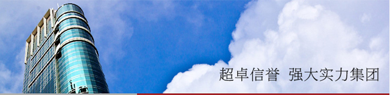

富昌金融集团是一家大型综合性金融集团，成立于1999年，总部坐落于香港中环核心商业圈—-陆海通大厦。目前旗下全资子公司包括：富昌证券有限公司、富昌期货有限公司、富昌资产管理有限公司，另设有富昌金业有限公司、富昌财务有限公司、富昌按揭有限公司、富昌地产代理有限公司、富昌财富管理有限公司（拥有保险经纪人资格）、富昌移民顾问有限公司等。
此外，集团早在2002年开始进军内地市场，并依托内地经济的腾飞，陆续成立了深圳市富昌小额贷款有限公司、深圳市富昌融资担保有限公司深圳市佳富投资管理有限公司等，为集团多元化的发展打下了坚实的基础。
作为跨区域的大型金融集团，秉承"专业、创新、价值、责任"的核心价值观，富昌已在大中华地区建成了一个庞大、强健、完善、高效的金融网路，为国内外投资者提供了安全、优质、领先的金融服务。
卓越成就
富昌金融集团屡获各知名机构颁发奖项，包括"中国自主品牌100强"、"大中华优秀品牌大奖"、"杰出企业社会责任奖 "、"大中華超卓商誉"等，以肯定集团的地位及成就。
更多荣誉欢迎关注www.ffg.com.cn/?page_id=234